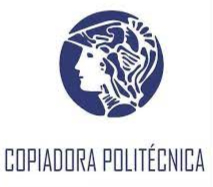

Representação estudantil
Levamos a voz dos alunos às instâncias da Poli e da USP.
O Grêmio Politécnico é a entidade de representação estudantil e de serviços dos alunos da Escola Politécnica da USP.

O Grêmio Politécnico é uma associação de representação estudantil e de oferecimento de serviços, formada por alunos e colaboradores externos.
Trabalhamos pelo desenvolvimento dos politécnicos por meio da representação estudantil, da formação, do apoio social e de serviços com impacto na vida de quem estuda na Poli.
Levamos a voz dos alunos às instâncias da Poli e da USP.
Iniciativas de impacto social dentro e fora do campus.
Eventos, festas e atividades que movimentam a vida na Poli.
Suporte para que cada politécnico aproveite ao máximo a graduação.
O resultado dos serviços volta para os projetos e para a representação dos alunos.

Escola de idiomas com mais de 30 anos de experiência: alemão, espanhol, francês, italiano, inglês e português.

Lanchonete no prédio do Biênio, com refeições a preços acessíveis.

Cópias e impressões, com planos de cotas para alunos.
Guias e utilidades feitos pelo Grêmio. Novas ferramentas entram aqui conforme forem lançadas.
Qual bandejão fica mais perto do seu prédio, o caminho a pé, o que está aberto agora e o cardápio do dia.

Fundado em 1º de setembro de 1903 por alunos da Escola Politécnica, o Grêmio é a segunda entidade estudantil mais antiga do Brasil.
De lá para cá, gerações de politécnicos passaram pela entidade e ajudaram a construir a história da escola.